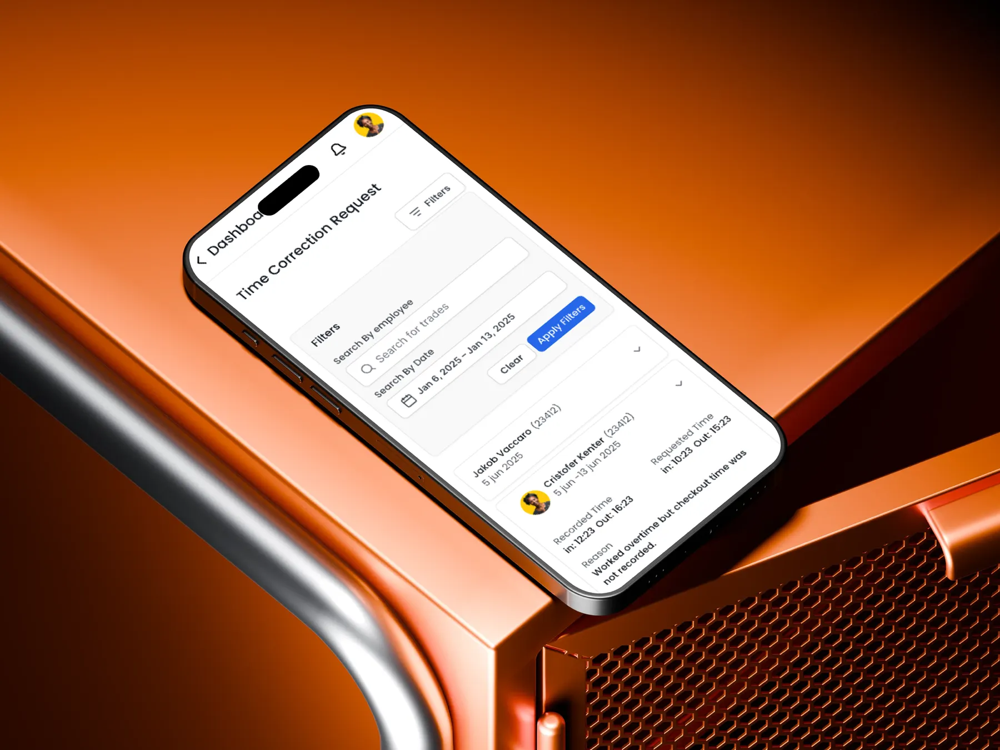
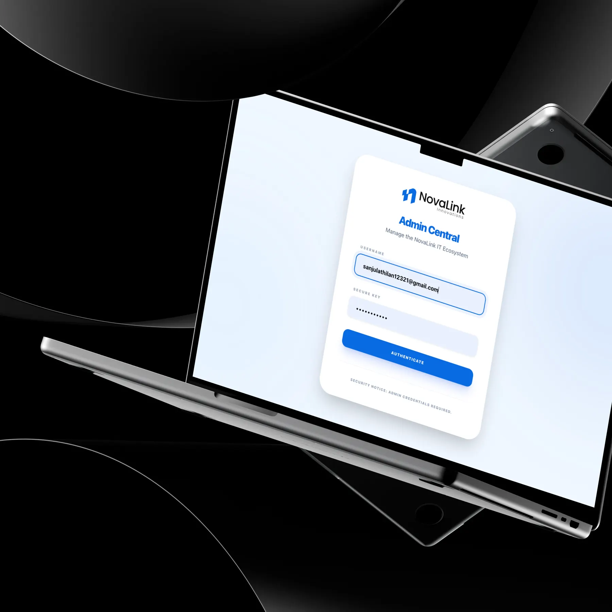
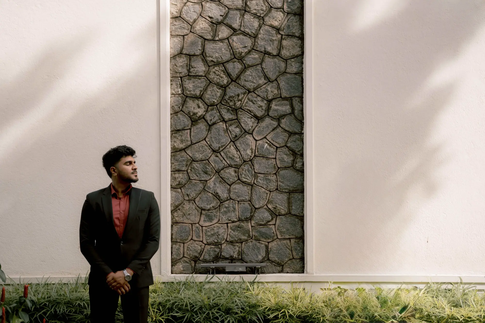

Sanjula Thilan UX Engineer · Melbourne
Making complexwork feel simple.
UX Engineer and founder of NovaLink Innovations.
I turn tangled workflows into products people can understand, trust and use.
4+ years with teams in Australia, the UK, Singapore and Sri Lanka.
Selected work
Products for marketplaces, care homes, HR teams and project teams, each taken from requirements to interface.

Taking the fear out of buying from strangers.
I designed a buyer–seller platform where every step of a deal is visible, protected and confirmed.

Less screen time. More care time.
I designed one role-based system for residents, medication, incidents and shifts, for staff who decide under pressure.

From paper requests to a tap and a face scan.
I designed a mobile workforce app for leave, overtime and attendance, with location-checked face recognition and automated approvals.

Designed it, built it, used it every day.
I designed and built an internal project management app in React, with AI-assisted planning and real-time email alerts.
Five ways I can help.
For teams hiring a UX engineer, and for businesses working with NovaLink Innovations. Each one links to work that shows it.
Brands, videos and side work.
Not every project needs a full case study. Redesigns, identities and experiments live in the playground.



Software roots. A user-first practice.
I'm Thilan. I trained as a software engineer, then found the part I loved most: the space between what a business needs and what a person can actually use. I work across research, UI/UX, front-end code and business analysis.
I also run NovaLink Innovations, a small studio building websites and software for local businesses, and I'm studying at Swinburne University in Melbourne.
He has a great sense to design with the user in mind. His designs are simple yet impactful, and he has a great eye for colour, look and feel.

Head of Business Consultancy